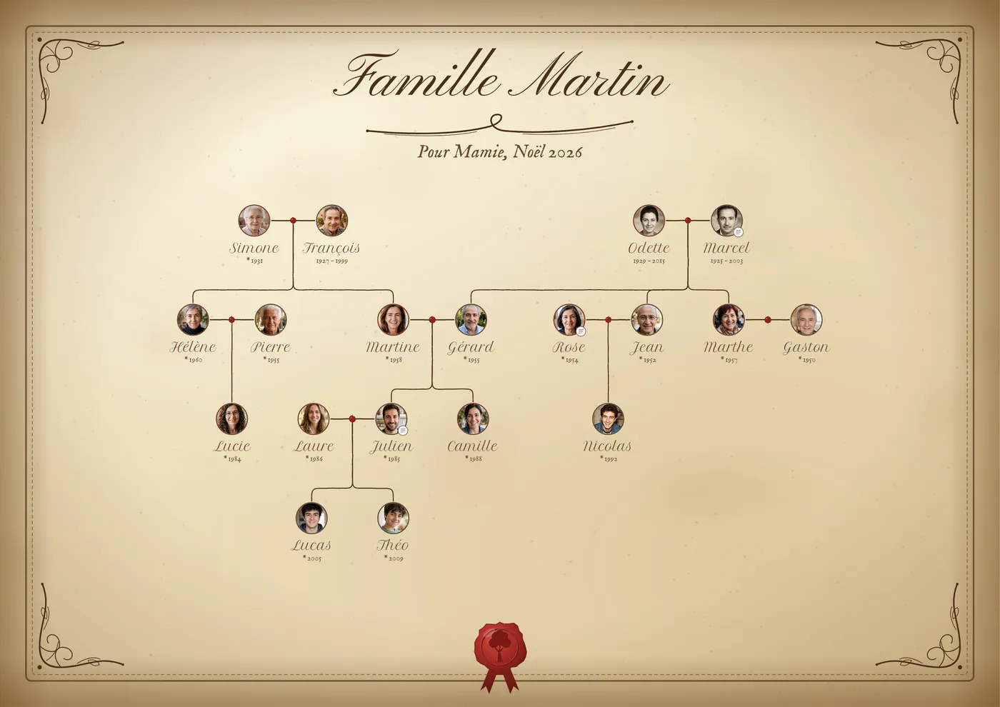
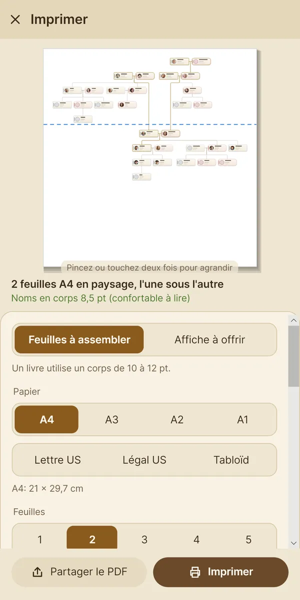
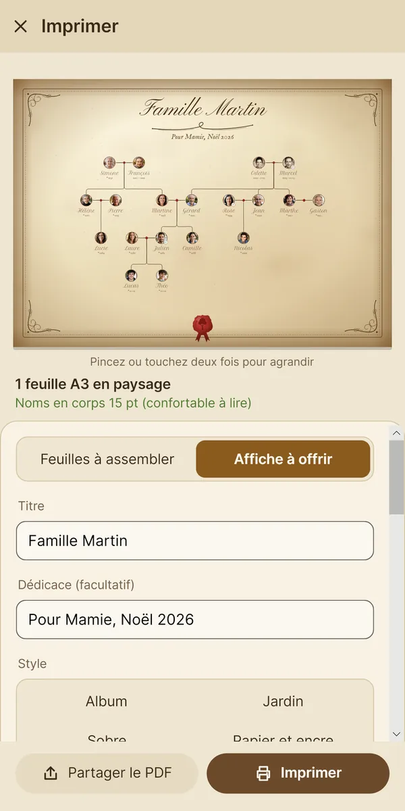

Comment imprimer votre arbre généalogique en grand, en 50×70 cm
Un arbre généalogique prend toute sa valeur en grand, encadré dans le salon ou chez les grands-parents. Ce guide explique comment choisir le format, rendre chaque nom lisible et le faire imprimer sans mauvaise surprise.

1. Choisissez le format
Le plus simple est d'imprimer l'arbre au format d'un cadre du commerce, pour ne pas avoir à en commander un sur mesure. Les plus faciles à trouver sont 30×40, 40×50 et 50×70 cm. Ramo les propose tous, ainsi que A4, A3, A2 et A1.
| Format | Pour quoi | Combien de personnes, à titre indicatif |
|---|---|---|
| A4 | L'imprimante de la maison | Jusqu'à 35 environ |
| A3 ou 30×40 cm | Un cadre moyen ou une table | Jusqu'à 50 environ |
| 40×50 cm | Un cadre au mur | Jusqu'à 60 environ |
| 50×70 cm | Le grand cadre du salon | Jusqu'à 90 environ |
Ces chiffres valent pour des fiches avec photo et des noms d'environ 9 points ; ils dépendent beaucoup de la forme de l'arbre. Inutile de calculer : Ramo vous indique la taille exacte des noms avant d'imprimer.
2. Préparez l'affiche dans Ramo
- Ouvrez l'arbre, touchez le menu et choisissez Imprimer.
- En haut, choisissez Affiche à offrir et, pour le papier, 50×70 cm (ou le format de votre cadre).
- Sous Disposition de l'arbre, vous voyez sous chaque option la taille des noms. L'étoile ★ marque celle qui les rend les plus grands.
- Écrivez le titre (« Famille Martin ») et, si vous voulez, une dédicace (« Pour Mamie, Noël 2026 »).
- Choisissez le style : Parchemin, Papier et encre, Jardin, Album… Chacun a son cadre, ses couleurs et sa police.


3. Rendez chaque nom lisible
En repère : 8 points se lisent de près, 10 à 12 se lisent confortablement avec le cadre en main ou posé sur une table, et pour le lire accroché au mur, mieux vaut dépasser 14. Si les noms sont trop petits, dans Ramo vous pouvez :
- Essayer une autre disposition : celles de gauche à droite aident beaucoup pour les familles très larges.
- Retirer des fiches ce dont vous n'avez pas besoin (la photo, les années ou les noms de famille). Ramo indique ce que chacun fait gagner.
- Rapprocher les fiches ou choisir une marge près du cadre fine.
- Passer au format supérieur, ou faire une affiche par branche (côté paternel et côté maternel).
Ouvrez l'aperçu en plein écran et zoomez avec les doigts : ce que vous voyez est ce qui sera imprimé.
4. Enregistrez le PDF et faites-le imprimer
Touchez Partager le PDF et envoyez-le-vous par e-mail ou copiez-le sur une clé USB. Le PDF de Ramo est vectoriel : les noms et les traits restent nets à toutes les tailles.
Chez l'imprimeur, en boutique photo ou sur un site d'impression de posters, demandez :
- Une impression à 100 % (taille réelle), sans « ajuster à la page ».
- Du papier photo mat ou du couché mat de 170 à 250 g : pas de reflets derrière la vitre.
- Une découpe au format du cadre, si la feuille est plus grande.
Et pour l'imprimer à la maison ?
Choisissez Feuilles à assembler : Ramo répartit l'arbre sur plusieurs feuilles A4 avec des repères pour les découper et les assembler, et vous montre d'abord combien de feuilles il faut et la taille des noms. C'est aussi dans la version gratuite.
Les affiches à offrir font partie de Ramo complet (un seul paiement). Avec la version gratuite, vous pouvez imprimer l'arbre sur des feuilles, avec une petite mention « Fait avec Ramo ».
Autres guides